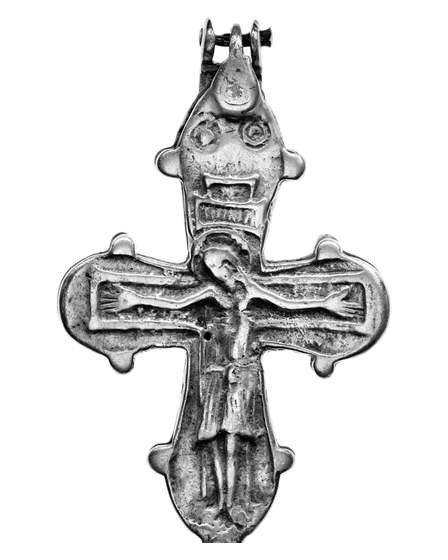
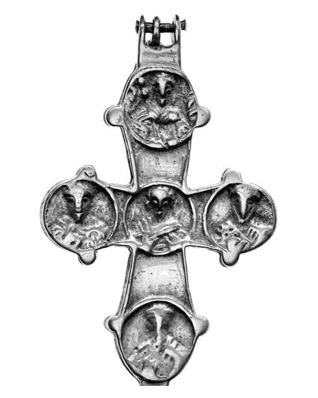

Catalog › CE-0585 · COM2026-140527595
Encolpion de argint din tezaurul Dörby, Öland, Muzeul de Istorie al Suediei 1672:5
nedatat · Dörby, Norra Möckleby, Öland, Suedia · Statens historiska museer (Historiska museet), Stockholm, inv. SHM 1672:5 (41772_HST)
double-sided reliquary cross (enkolpion), argint; nedatat; found at Dörby, Norra Möckleby, Öland, Suedia; kept at Statens historiska museer (Historiska museet), Stockholm.




Identificare
- Categorie
- Encolpion bivalv (relicvar)
- Material
- Argint
Iconografie
- Descriere avers
- Hristos răstignit (fotografie de catalog).
- Descriere revers
- Medalioane pe brațe și pe extremități (fotografie de catalog).
Datare și atribuire
- Datare
- nedatat
Descoperire
- Localitate
- Dörby, Norra Möckleby, Öland
- Țară
- Suedia
- Context
- Tezaur
- Coordonate
- 56.5922° N, 16.6272° E
- Precizia locului
- Doar localitatea
Păstrare și referințe
- Colecție
- Statens historiska museer (Historiska museet), Stockholm
- Nr. inventar
- SHM 1672:5 (41772_HST)
- Bibliografie
- Fotografie: Ola Myrin, Statens historiska museer, Wikimedia Commons, licență CC BY 4.0, https://commons.wikimedia.org/?curid=140527595 (accesat 17.10.2026).
- Figura
- Wikimedia Commons, pagina 140527595
- Observații
- Descrierea SHM (fotografia 83243838, CC BY 2.0): purtat pe un lanț lung la gât, conținea o mică relicvă; descoperire în tezaur. Legătura cu fotografiile 140527595/140527601 (obiect 41772_HST) vine din trimiterea kulturarvsdata din acea fotografie. Fotografiile au riglă de ≈10 cm, tăiată din decupaj. Datare: nu e dată în sursă. Coordonate: ale parohiei Norra Möckleby, aproximative, nu date în sursă.
Citare: Corpus Encolpiorum, CE-0585, Encolpion de argint din tezaurul Dörby, Öland, Muzeul de Istorie al Suediei 1672:5, --root/piese/COM2026-140527595/ (accesat 2026-10-17).